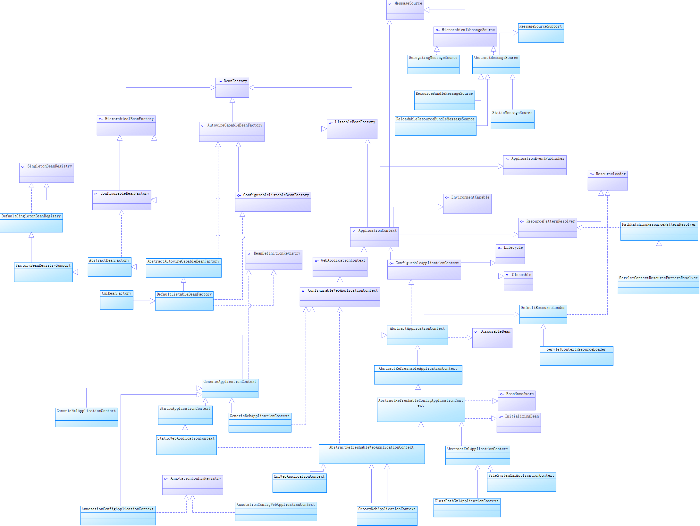

整理了下spring4的BeanFactory的家族图谱，对spring定制的整个IOC标准有个大致的了解。

- 首先是BeanFactory，IOC相关的基类，主要定义getBean()的标准。
- 主要是看BeanFactory->ListableBeanFactory->ApplicationContext 这条线。
- ListableBeanFactory，BeanFactory的扩展类，定义了可以枚举所有Bean实例的功能，而不是根据请求试图按照名字逐个的去查询。
- ApplicationContext 为应用提供配置功能的核心接口。继承了ListableBeanFactory，又继承了HierarchicalBeanFactory（定义了BeanFactory可以有父节点）使容器具有的分层的特性。
- 接着是ApplicationContext继承了MessageResource 的接口，定义处理消息的策略，支持参数化和国际化的消息，使得ApplicationContext具有的对消息处理的功能。
- ApplicationContext 继承了接口EnvironmentCapable，定义了容器可获得当前运行环境的特性（System.getenv()和System.getProperties()）
- ApplicationContext 继承了接口ApplicationEventPublisher，定义了IOC容器的一些事件的监听及处理操作，如ContextClosedEvent，ContextRefreshedEvent等事件。
- ApplicationContext 继承了接口ResourcePatternResolver，继承与ResourceLoader接口，解析Ioc容器的资源的加载器，把待加载到容器中的bean等资源解析出来。
- ConfigurableApplicationContext 提供配置应用程序上下文和ApplicationContext接口中client的功能。继承接口Lifecycle用于定义启动/停止生命周期控制的方法。典型的用例是控制异步处理。
- AbstractApplicationContext 实现接口ConfigurableApplicationContext，是接口ApplicationContext的抽象实现，使用模板方法实现通用的ApplicationContext的功能，
- AbstractRefreshableApplicationContext实现AbstractApplicationContext， 线程安全（synchronized），实现refreshBeanFactory，cancelRefresh，closeBeanFactory，getBeanFactory方法，子类需实现loadBeanDefinitions方法。
- AbstractRefreshableConfigApplicationContext添加指定配置位置的常规处理的子类，是实现基于xml配置的ApplicationContext的基类。
- AbstractXmlApplicationContext,实现子类需实现loadBeanDefinitions方法，通过XmlBeanDefinitionReader读取XML中的bean的定义。
- ClassPathXmlApplicationContext从classpath路径(“mypackage/myresource.txt”)中读取bean的配置文件，如果多个配置文件，后加载的bean可以覆盖先加载的bean。
- FileSystemXmlApplicationContext从文件系统（”mydir/myfile.txt”）中读取配置，其他的和ClassPathXmlApplicationContext相同。
- AbstractRefreshableWebApplicationContext是对AbstractRefreshableConfigApplicationContext加入了web的属性.
- XmlWebApplicationContext默认读取/WEB-INF/applicationContext.xml配置文件。
- AnnotationConfigWebApplicationContext读取定义包下的Annotation注解的bean。
- GenericApplicationContext 是对ApplicationContext的通用的实现，内部定义了一个DefaultListableBeanFactory，不指定bean的定义的形式。通过实现BeanDefinitionRegistry接口，以适应各种bean定义的reader。
- GenericXmlApplicationContext定义用XmlBeanDefinitionReader读取BeanDefinition。
- StaticApplicationContext ApplicationContext支持bean和消息的编程注册的实现，而不是从外部配置源读取bean定义。主要用于测试。
- GenericWebApplicationContext,AnnotationConfigApplicationContext